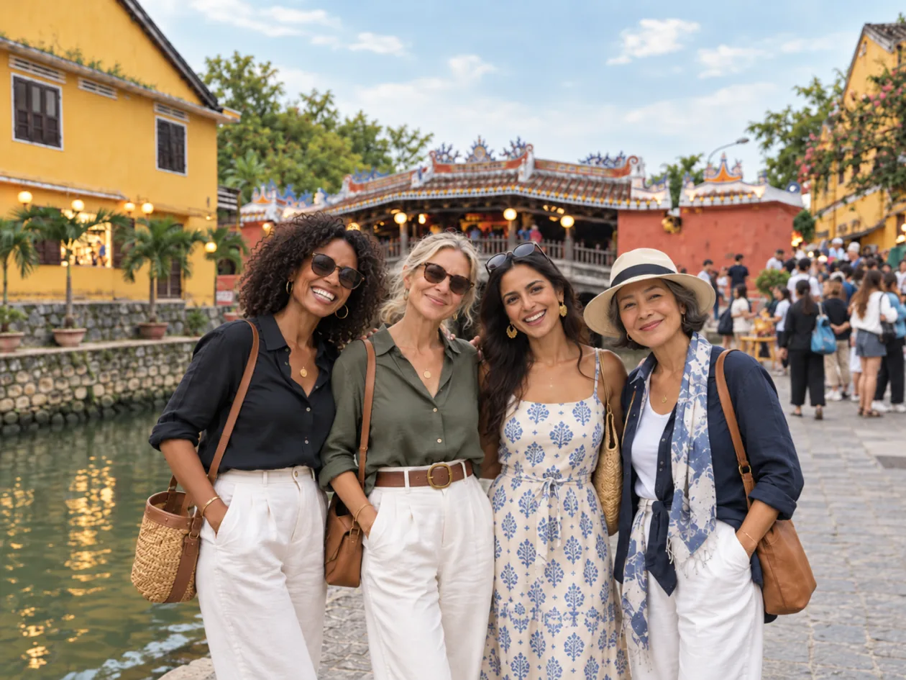

<!doctype html>
<html lang="en-US">
<head>
<meta charset="utf-8">
<title>Blooming Passage banner</title>
<!-- One template, many sizes: render.sh opens it as banner.html?v=<name> at that exact window size and screenshots it.
     Every layout keeps the women, the Japanese Covered Bridge, the logo and all text inside each platform's safe area. -->
<style>
@font-face { font-family: "Cormorant Garamond"; font-weight: 300 700; src: url(../../html/fonts/cormorant-latin.woff2) format("woff2"); }
@font-face { font-family: "Cormorant Garamond"; font-style: italic; font-weight: 300 700; src: url(../../html/fonts/cormorant-italic-latin.woff2) format("woff2"); }
@font-face { font-family: "Manrope"; font-weight: 200 800; src: url(../../html/fonts/manrope-latin.woff2) format("woff2"); }
:root { --cream: #f5f2ea; --ink: #2f302a; --green: #2f4a3a; --gold: #b9a27a; --gold-deep: #a07f4c; --rust: #8c6a4f; }
* { box-sizing: border-box; margin: 0; padding: 0; }
html, body { width: var(--w); height: var(--h); overflow: hidden; }
body { position: relative; background: var(--cream); color: var(--ink); font-family: "Manrope", sans-serif; }
/* paper: soft warm light from the photo side */
body::before { content: ""; position: absolute; inset: 0; background: radial-gradient(ellipse at var(--glow, 75% 40%), #fbf8f1 0%, rgba(251, 248, 241, 0) 60%); }
.abs { position: absolute; }
.wash { -webkit-mask: url(../../html/images/ink-wash.svg) center / 100% 100% no-repeat; mask: url(../../html/images/ink-wash.svg) center / 100% 100% no-repeat; }
.wash--gold { background: var(--gold); opacity: .42; }
.wash--rust { background: var(--rust); opacity: .18; transform: scaleX(-1) rotate(4deg); }
.photo { -webkit-mask: url(../../html/images/ink-mask.svg) center / 100% 100% no-repeat; mask: url(../../html/images/ink-mask.svg) center / 100% 100% no-repeat; }
.photo img { width: 100%; height: 100%; object-fit: cover; object-position: var(--pos, 55% 42%); display: block; }
.leaf { background: url(../../html/deco-logo.png) center / contain no-repeat; }
.dot { position: absolute; border-radius: 50%; background: var(--rust); opacity: .7; }
.text { display: flex; flex-direction: column; justify-content: center; }
.text--center { align-items: center; text-align: center; }
.logo { display: block; height: auto; }
.eyebrow { font-weight: 600; letter-spacing: .2em; white-space: nowrap; text-transform: uppercase; color: var(--gold-deep); font-size: calc(var(--fs) * .2); }
.slogan { text-wrap: balance; font-family: "Cormorant Garamond", serif; font-weight: 500; line-height: 1.02; color: var(--green); font-size: var(--fs); letter-spacing: -.005em; }
.slogan em { font-style: italic; color: var(--rust); }
.rule { width: calc(var(--fs) * 1.5); height: 2px; background: var(--gold); }
.sub { text-wrap: balance; font-size: calc(var(--fs) * .3); line-height: 1.5; color: #55574d; max-width: 34em; }
.url { display: inline-flex; align-items: center; gap: .7em; font-weight: 700; letter-spacing: .14em; color: var(--green); font-size: calc(var(--fs) * .25); }
.url::before { content: ""; width: 1.9em; height: 1.5px; background: var(--gold); }
.text--center .url::after { content: ""; width: 1.9em; height: 1.5px; background: var(--gold); }
</style>
</head>
<body>
<script>
/* Boxes are [x, y, width, height] in px. fs = slogan size. logo: 'inline' (top of the text block) or [x, y, width].
   gap = vertical rhythm inside the text block. Notes say which area each platform hides or crops. */
const V = {
  // Link previews (Facebook, Zalo, iMessage, LinkedIn, X): shown whole.
  'og-1200x630': { w: 1200, h: 630, fs: 66, gap: 22, logo: 'inline', logoW: 300, text: [72, 40, 500, 550], photo: [575, 52, 600, 526], gold: [540, 150, 470, 520], rust: [860, 0, 360, 300], leaf: [1080, 330, 150, 300], dots: [[60, 590, 5], [1170, 40, 4], [1150, 590, 3]] },
  // Facebook page cover: phones show only the middle ~1110 px (x 265-1375).
  'facebook-cover-1640x624': { w: 1640, h: 624, fs: 64, gap: 20, logo: 'inline', logoW: 290, text: [300, 40, 500, 544], photo: [830, 48, 540, 528], gold: [790, 140, 430, 500], rust: [1140, 0, 340, 290], leaf: [1260, 330, 150, 290], glow: '60% 40%', dots: [[1400, 70, 5], [240, 560, 4]] },
  // X / Twitter header: the profile photo covers the lower-left corner; phones trim ~60 px top and bottom.
  'x-header-1500x500': { w: 1500, h: 500, fs: 54, gap: 16, logo: 'inline', logoW: 250, text: [330, 70, 500, 360], photo: [860, 40, 580, 420], gold: [820, 130, 400, 360], rust: [1200, 0, 300, 230], leaf: [1380, 250, 120, 240], dots: [[300, 470, 4], [1460, 40, 4]] },
  // LinkedIn banner: the profile photo covers the lower-left corner.
  'linkedin-1584x396': { w: 1584, h: 396, fs: 46, gap: 12, logo: 'inline', logoW: 220, text: [340, 36, 560, 324], photo: [940, 22, 560, 352], gold: [900, 100, 380, 300], rust: [1300, 0, 284, 200], leaf: [1470, 190, 110, 200], dots: [[310, 370, 4], [1560, 30, 3]] },
  // YouTube channel art: everything important sits in the centre 1546 x 423 (x 507-2053, y 508-931) that every device shows.
  'youtube-2560x1440': { w: 2560, h: 1440, fs: 62, gap: 18, logo: 'inline', logoW: 290, text: [540, 508, 620, 423], photo: [1260, 500, 790, 440], gold: [1180, 600, 560, 520], rust: [1700, 300, 520, 420], leaf: [2060, 520, 230, 440], glow: '60% 50%', dots: [[520, 940, 6], [2080, 470, 5], [1210, 470, 3]] },
  // Instagram / Facebook square post.
  'instagram-1080x1080': { w: 1080, h: 1080, fs: 64, gap: 18, logo: [380, 54, 320], text: [80, 760, 920, 290], center: true, photo: [80, 160, 920, 600], gold: [40, 300, 640, 480], rust: [620, 120, 460, 300], leaf: [920, 470, 150, 300], glow: '50% 40%', dots: [[60, 140, 5], [1030, 760, 4]] },
  // Instagram portrait post (4:5).
  'instagram-portrait-1080x1350': { w: 1080, h: 1350, fs: 70, gap: 20, logo: [370, 66, 340], text: [80, 960, 920, 330], center: true, photo: [70, 210, 940, 730], gold: [30, 400, 660, 560], rust: [600, 160, 480, 320], leaf: [920, 600, 150, 300], glow: '50% 40%', dots: [[60, 190, 5], [1030, 950, 4]] },
  // Stories (Instagram, Facebook, TikTok): app buttons cover the top 250 px and bottom 340 px.
  'story-1080x1920': { w: 1080, h: 1920, fs: 84, gap: 26, logo: [330, 270, 420], text: [70, 1250, 940, 330], center: true, photo: [40, 430, 1000, 800], gold: [10, 660, 700, 620], rust: [600, 380, 480, 360], leaf: [910, 900, 170, 340], glow: '50% 40%', dots: [[70, 420, 6], [1020, 1230, 5]] },
  // Pinterest pin (2:3).
  'pinterest-1000x1500': { w: 1000, h: 1500, fs: 74, gap: 22, logo: [325, 60, 350], text: [60, 1010, 880, 420], center: true, photo: [40, 200, 920, 780], gold: [10, 420, 640, 600], rust: [560, 150, 440, 330], leaf: [860, 640, 140, 300], glow: '50% 40%', dots: [[50, 180, 5], [960, 990, 4]] },
  // Widescreen (presentations, website or email header, video end card).
  'widescreen-1920x1080': { w: 1920, h: 1080, fs: 104, gap: 34, logo: 'inline', logoW: 470, text: [120, 60, 800, 960], photo: [920, 90, 920, 900], gold: [860, 260, 720, 880], rust: [1440, 0, 520, 470], leaf: [1730, 560, 220, 460], dots: [[100, 1010, 7], [1880, 60, 6], [1860, 1010, 4]] },
};
const name = new URLSearchParams(location.search).get('v') || 'og-1200x630';
const c = V[name];
const R = document.documentElement.style;
R.setProperty('--w', c.w + 'px'); R.setProperty('--h', c.h + 'px'); R.setProperty('--fs', c.fs + 'px');
if (c.glow) R.setProperty('--glow', c.glow);
const box = (el, b) => Object.assign(el.style, { left: b[0] + 'px', top: b[1] + 'px', width: b[2] + 'px', height: b[3] + 'px' });
const add = (cls, b, html) => { const d = document.createElement('div'); d.className = 'abs ' + cls; if (b) box(d, b); if (html) d.innerHTML = html; document.body.appendChild(d); return d; };
add('wash wash--gold', c.gold);
add('wash wash--rust', c.rust);
add('photo', c.photo, '');
add('leaf', c.leaf);
c.dots.forEach(([x, y, r]) => { const d = add('dot'); Object.assign(d.style, { left: x - r + 'px', top: y - r + 'px', width: 2 * r + 'px', height: 2 * r + 'px' }); });
const logo = '';
if (Array.isArray(c.logo)) { const l = add('', null, logo); Object.assign(l.style, { left: c.logo[0] + 'px', top: c.logo[1] + 'px', width: c.logo[2] + 'px' }); l.firstChild.style.width = '100%'; }
const t = add('text' + (c.center ? ' text--center' : ''), c.text,
  (c.logo === 'inline' ? logo : '') +
  '<p class="eyebrow">Small-group journeys for women · Central Vietnam</p>' +
  '<h1 class="slogan">It’s your time <em>to bloom.</em></h1>' +
  '<span class="rule"></span>' +
  '<p class="sub">Culture, wellness, beauty and meaningful connection in Da Nang, Hoi An and Hue.</p>' +
  '<p class="url">WWW.BLOOMINGPASSAGE.COM</p>');
t.style.gap = c.gap + 'px';
if (c.logo === 'inline') { const l = t.querySelector('.logo'); l.style.width = c.logoW + 'px'; l.style.marginBottom = c.gap * .6 + 'px'; }
// wait for fonts and images before the screenshot is taken
document.fonts.ready.then(() => Promise.all([...document.images].map(i => i.decode().catch(() => {})))).then(() => document.body.dataset.ready = '1');
</script>
</body>
</html>
